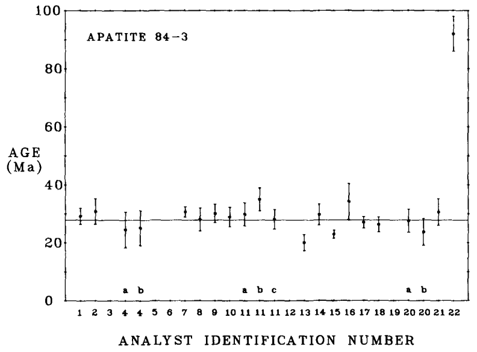

geochron@home:
a crowd-sourcing app for fission track dating
Introduction to the fission track method
Apatite and zircon are two minerals which are commonly found in rocks
such as granite, sandstone and gneiss, and contain up to 0.1 weight
percent of uranium. 99.9998% of this naturally occurring uranium
undergoes radioactive decay by disintegrating into eight He-nuclei and
a Pb atom at a precisely known rate, forming the basis of the U-Pb and
U-Th-He clocks. The remaining 0.0002% of the uranium undergoes
spontaneous fission, forming the basis of fission track
geochronology. Spontaneous fission is the process whereby a heavy and
unstable atom disintegrates into two particles of roughly equal size,
which move in opposite directions through the crystal lattice of the
host mineral, creating a damage trail of 10-15μm length
(
Figure 1). With time, the density (tracks per
unit area) of these so-called 'fission tracks' increases at a rate
that is proportional to the U-concentration of the mineral. Although
fission tracks are are too small to see with even the most sensitive
microscopes, they can easily be revealed by acid etching. An age can
be calculated by (a) counting the surface density (in tracks per unit
area) of the fission tracks with an optical microscope, (b)
mathematically converting this surface density to a volume density
(tracks per unit volume), and (c) measuring the U-content (atoms per
unit volume) of the same surface.
geochron@home aims to
crowd-source the first step in this procedure in order to improve the
accuracy of the fission track method.
(a)
(b)
Figure 1
(a) top: spontaneous fission of 238U damages the crystal
lattice of minerals, bottom: polishing mineral grains to reveal an internal
surface and etching it with acid reveals the fission tracks to the
human eye; (b) a real-world example of fission tracks in apatite.
The benefits of crowd-sourcing
In 1906, Sir Francis Galton visited a county fair in which a contest
was held to guess the weight of an ox. 787 villagers participated in
the event. Galton discovered that the average of all their estimates
(1,197 lbs) was significantly closer to the true weight of the ox
(1,198 lbs) than any of the individual estimates
(
Figure 2a). Such is the wisdom of crowds [1,2].
Similar effects are seen in fission track geochronology, which is a
geological dating technique based on the manual counting of damage
tracks created by the sponteous fission of $^{238}$U in
uranium-bearing minerals. A 1984 interlaboratory comparison study [3]
has shown that the average of several fission track age estimates is
closer to the known age of mineral standards than the age obtained by
any individual observer (
Figure 2b). Unfortunately, routine
measurement of fission track samples by multiple analysts is
prohibitively expensive in a normal laboratory environment. However,
recent advances in digital microscopy enable the automated acquisition
of three-dimensional 'stacks' of images, allowing fission tracks to be
counted on a computer, away from the physical
microscope.
geochron@home uses such digital imagery in a
crowd-sourcing platform for geochronological research. Taking fission
track dating to a proverbial `county fair' of citizen-scientists
benefits the method in three ways:
- It improves the accuracy of the ages by -based on the
inter-laboratory comparison study- up to 25% (Figure
2b).
- Having multiple estimates of the fission track density
provides a treasure-trove of statistical data that can be used to
better quantify the accuracy of legacy data.
- It accelerates the analytical process and frees up precious
time for academic users.
(a)
(b)

Figure 2
(a) Results of Galton (1907)'s ox-weighing experiments, and (b) the
1984 fission track calibration study. In both cases, the (geometric)
mean of multiple estimates is far more accurate than any individual
estimate.
References
Price, P. B., & Walker, R. M. (1963). Fossil tracks of charged
particles in mica and the age of minerals.
Journal of Geophysical
Research, 68(16), 4847-4862.
Galton, F. Vox populi.
Nature, 75:450–451, 1907.
Galton, F. The ballot box.
Nature, 75:509–510, 1907.
Miller, D.S., Duddy, I.R. , Green, P.F., Hurford, A.J. and Naeser,
C.W. Results of interlaboratory comparison of fission-track age
standards: fission-track workshop – 1984.
Nuclear Tracks and
Radiation Measurements (1982), 10(3):383–391, 1985.
{kind=link}
{kind=link}